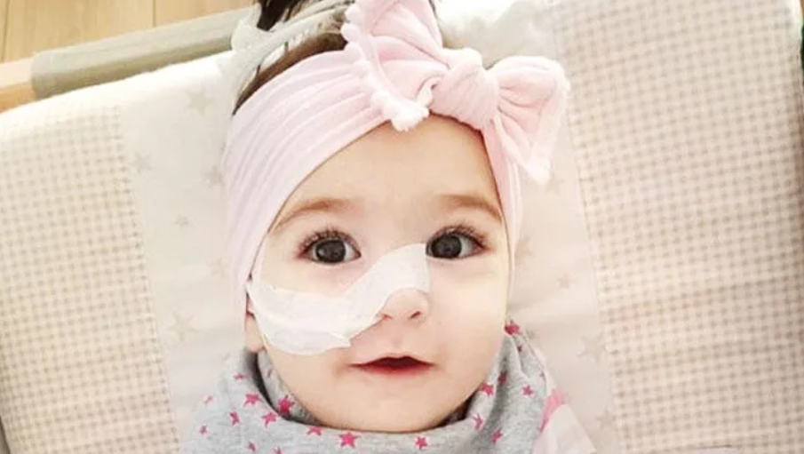
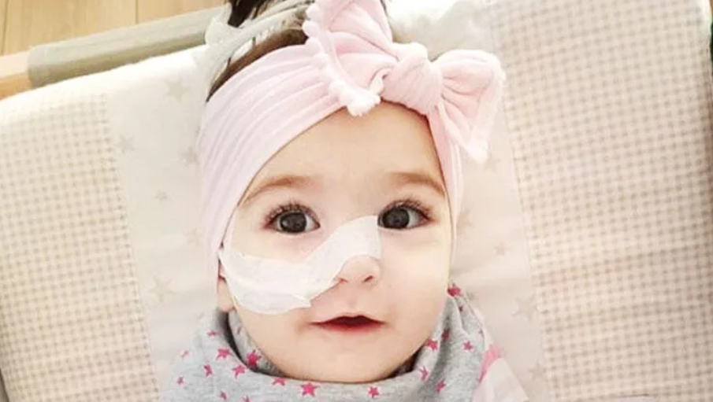
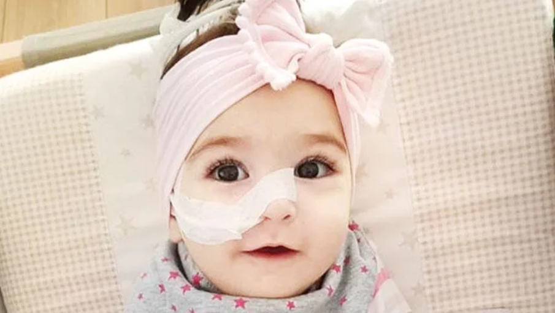

Spinal Musküler Atrofi (SMA), sinir hücrelerini etkileyen genetik bir hastalıktır. Bu hastalık, kasları kontrol eden motor sinir hücrelerinin zamanla kaybına ve kas zayıflığına neden olur.
SMA'nın farklı tipleri vardır ve hastalığın şiddeti, tipine bağlı olarak değişiklik gösterebilir.
SMA'nın belirtileri genellikle kişiden kişiye farklılık gösterebilir, ancak yaygın belirtiler arasında şunlar bulunur:
SMA, genellikle bebeklik veya çocukluk döneminde başlar. Türkiye'de SMA hastalarının sayısı her yıl değişebilmekle birlikte, bu hastalığa sahip olan bireylere ve ailelere destek sağlamak için çalışmalar yürütülmektedir. SMA'nın tedavi seçenekleri arasında gen terapisi, fizyoterapi, rehabilitasyon ve destekleyici tedaviler bulunabilir.
SMA hakkında farkındalığın artması, erken teşhisin önemi ve uygun tedavi imkanlarının sağlanması büyük önem taşır. Bu sayede, SMA hastalığına sahip olan bireylerin yaşam kalitesi artırılabilir, destek sistemleri güçlendirilebilir ve gelecekteki tedavi yöntemleri için umutlar yeşertilebilir. Araştırmalar ve bilimsel çalışmalar, SMA hastalığıyla mücadelede yeni tedavi yöntemleri ve ilerlemelerin sağlanması konusunda umut vermektedir.
Her yıl birçok SMA hastası, mücadelelerini kazanarak hastalığı yenmekte ve hayatlarına devam etmektedir. Bu hikaye, SMA hastalığını yenmiş bir bireyin hikayesini anlatmaktadır.
Hikayemiz, küçük bir kız çocuğu olan Ela'nın mücadelesiyle başlar. Ela, SMA hastalığına doğuştan sahipti ve ailesi bu zorlu süreçte ona destek olmaktaydı. Ela'nın ilk belirtileri, kas zayıflığı ve hareketlilik sorunlarıyla ortaya çıktı. Ela'nın ailesi, SMA hastalığının erken teşhisinin ve uygun tedavi yöntemlerinin önemini biliyordu. Bu nedenle, Ela'nın tedavisi için en iyi sağlık uzmanlarıyla iletişime geçtiler ve tedavi sürecini başlattılar.
Ela'nın tedavisi, bir multidisipliner ekip tarafından yönetiliyordu. Fizyoterapistler, rehabilitasyon uzmanları ve diğer sağlık profesyonelleri, Ela'nın kas gücünü artırmak ve hareketliliğini iyileştirmek için çalıştılar.
Ela'nın ailesi, tedavinin yanı sıra destekleyici bir ortam sağlamak için elinden geleni yaptı. Ona sevgi dolu bir ev ortamı sunarak moral ve motivasyonunu yüksek tuttular. Zamanla, Ela'nın kasları güçlendi ve hareketliliği arttı. Tedavi sürecinde yaşadığı zorluklara rağmen, Ela hiç pes etmedi ve mücadeleyi sürdürdü.
Bugün, Ela SMA hastalığını yenmiş bir bireydir. Kas gücü ve hareketliliği büyük ölçüde iyileşmiştir ve hayatına normal bir şekilde devam etmektedir. Ela, başarı hikayesiyle diğer SMA hastalarına umut ve ilham kaynağı olmaktadır.
Bu hikaye, SMA hastalığıyla mücadele eden birçok kişinin mücadelesini ve başarılarını temsil etmektedir. SMA'yı yenmek mümkündür ve doğru teşhis, erken tedavi ve destekleyici bir ortamla birlikte başarıya ulaşılabilir.
